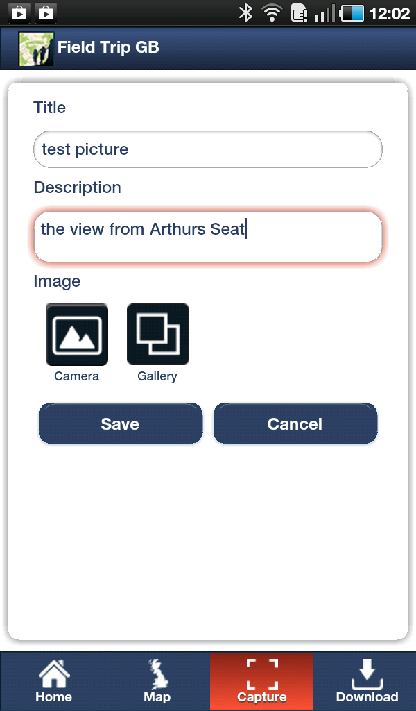
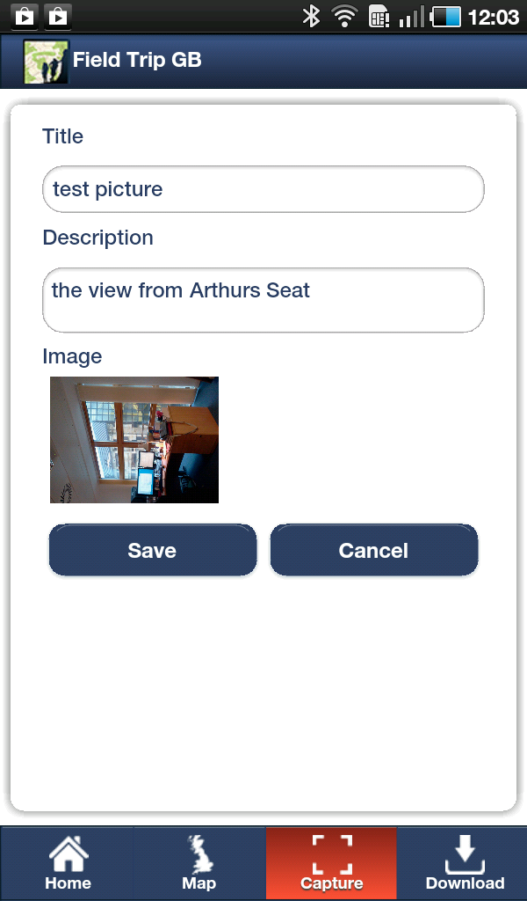
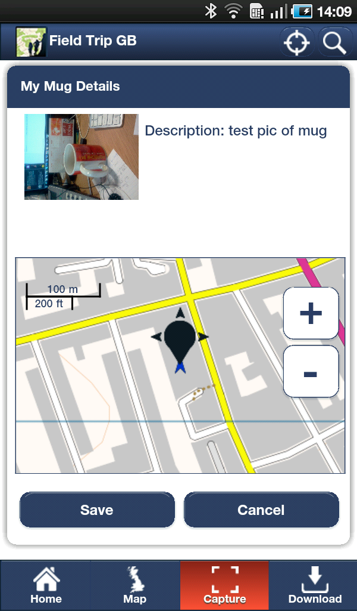
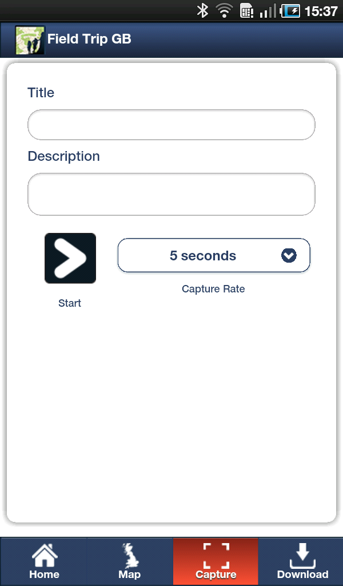

The capture section contains all the tools that you need to acquire data in the field. At present we have limited the data capture to point data and GPS tracks. Point data can have images, audio or text associated with it.
To capture something, press the most appropriate icon and a data form will appear. Figure 3.1 shows the data form for Image capture.
Fig 3.1 -Image Capture Form
You need to give the image a Title and a Description, this will make it easier to manage your data when you get back to the office. To attach the image, you can either capture an image from the camera by tapping the Camera Button or you can attach an image that is stored on the device by selecting the Gallery Button. Note that if you choose to select an image from the Gallery, the app will launch your devices standard gallery viewer and hence the look and feel of this will vary between devices.
Once you have attached an image it will be shown as a thumbnail on the data capture form (fig 3.2).
Fig 3.2 - Image Capture with image attached
Once you are happy with the image, it's title and its description you can tap the Save Button. On pressing the Save Button, you will see the following screen (Fig 3.2) which shows your image and a map. The placemarker shows the current, or last known, GPS position. If you are happy with this location then you can tap Save to accept the location. If you are not happy and want to alter the position, perhaps you cannot get to the exact location of your feature or the GPS seems inaccurate, then drag the black place marker to the correct location. You can use the zoom in/out controls if needed. When you are happy that the placemarker is in the right position, tap Save (fig 3.3).
Fig 3.3 - Refine location information
After tapping save, you will return to the map and your latest capture will be displayed on the map (fig 3.4).
Fig 3.4 - Data captures shown on mapGPS Track
FieldTrip GB also allows you to capture GPS tracks. This can be really useful to log a route that you have taken during fieldwork, or to capture the boundary of a feature such as a flood or perhaps a neighborhood.
The GPS form is similar to the image and audio forms, you have to give the Track a Title and Description. The other option that is available is the Capture Rate. This is the frequency that GPS positions are logged. The default is set at 5 seconds but you can increase this to 1 second. Increasing the frequency will use more battery power. Once you are happy with the variables, tap the Start Button to start recording your position (fig 3.5).
Fig 3.5 - GPS Track setup
When you tap Start you will be returned to the map screen but there will be a row of controls along the top of the map window (fig 3.6).
Stop:To stop and save the current track.
Pause: To Pause the current track, perhaps your are going into a building or deviating from the feature you are tracing. A paused track will be able to be re-started
Show/hide Route: Allows you to view or hide the current route